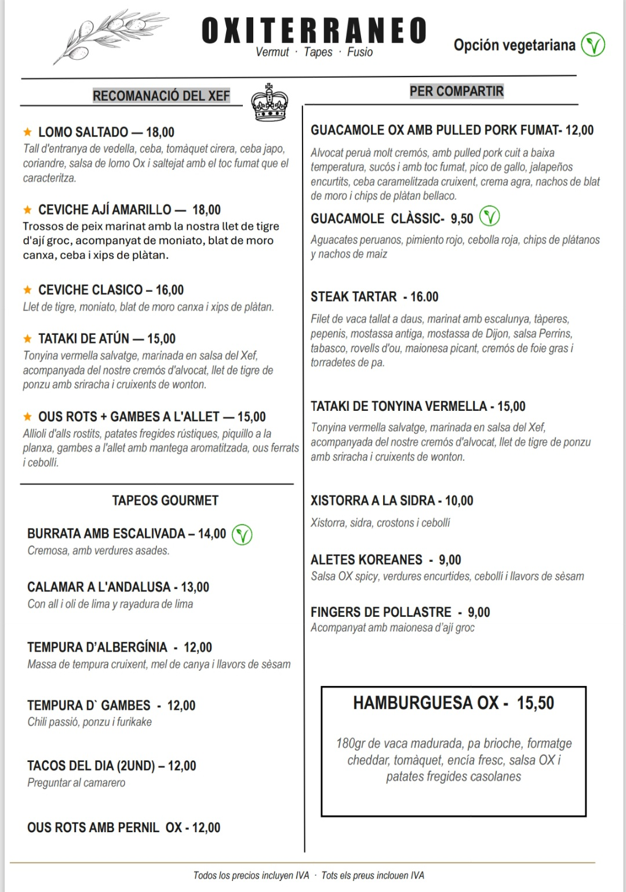

Un lugar con encanto desde que entras. Tapas de fusión donde cada plato es mejor que el anterior: ceviche, gambas borrachas, y un vermut de la casa que se lleva un 10.A place with charm from the moment you walk in. Fusion tapas where every plate outdoes the last: ceviche, drunken prawns, and a house vermouth that scores a perfect 10.
Camareros amables, relación calidad-precio inmejorable y ese 4,9★ que no se consigue por casualidad. En Sant Andreu, lejos del turismo, pero que merece el viaje.Warm staff, unbeatable value and a 4.9★ that isn't luck. In Sant Andreu, off the tourist trail, but worth the trip.
